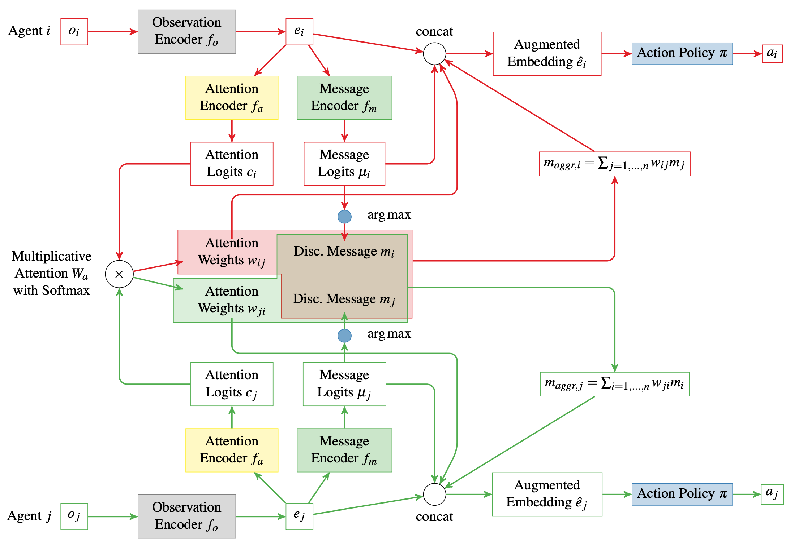

Read the local world
An observation encoder turns each agent’s private input into a compact embedding.
ICRA 2022 · Cooperative MARL
A compact, interpretable language for agents that need to act together— learned through broadcast, listening, and self-attention.

Communication is central to cooperation, but many multi-agent systems exchange continuous vectors whose expressive power comes at the cost of interpretability. The agents may coordinate, yet neither a human designer nor another system can easily inspect what was said.
This work asks whether agents can learn a discrete protocol—closer to a small vocabulary than an opaque latent channel—while preserving the performance benefits of learned communication.
Can agents learn messages small enough to inspect, yet expressive enough to cooperate?
Each agent encodes its local observation, produces a candidate discrete message, and learns how strongly to attend to messages from other agents. The weighted message aggregate augments the agent’s own representation before its policy selects an action.
An observation encoder turns each agent’s private input into a compact embedding.
Message logits select a discrete token while attention weights decide which incoming messages matter.
The aggregated message joins the local embedding so the action policy can respond to the group.
A constrained channel can still carry the information a cooperative team needs.
The learned discrete protocol achieved performance comparable to continuous-message approaches.
Agents coordinated with a much smaller vocabulary, making the channel easier to inspect and reason about.
The same discrete interface enables humans to send messages interactively to participating agents.
Published at ICRA 2022
IEEE International Conference on Robotics and Automation · 2022